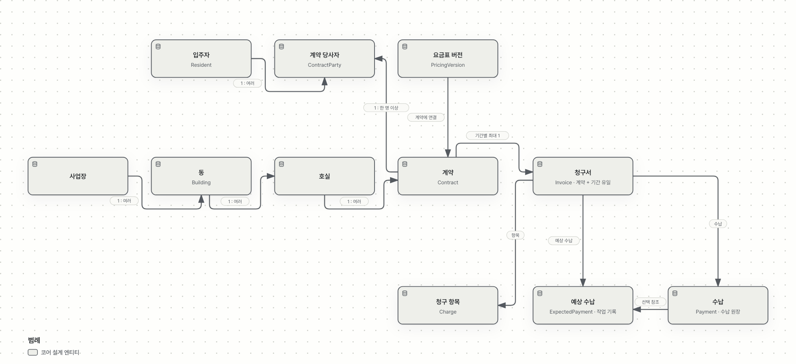
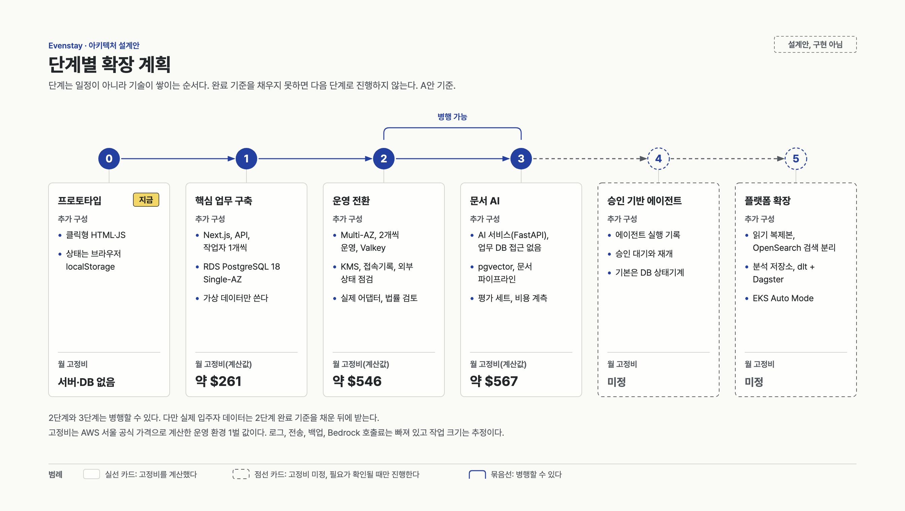
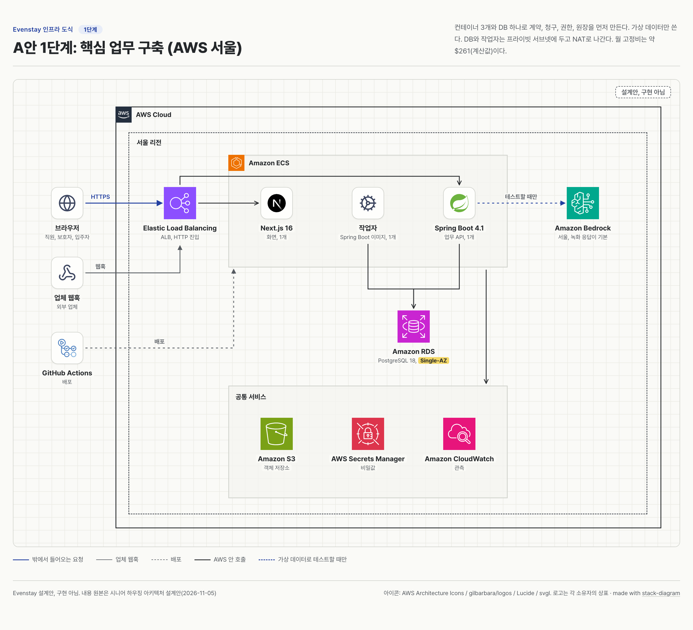
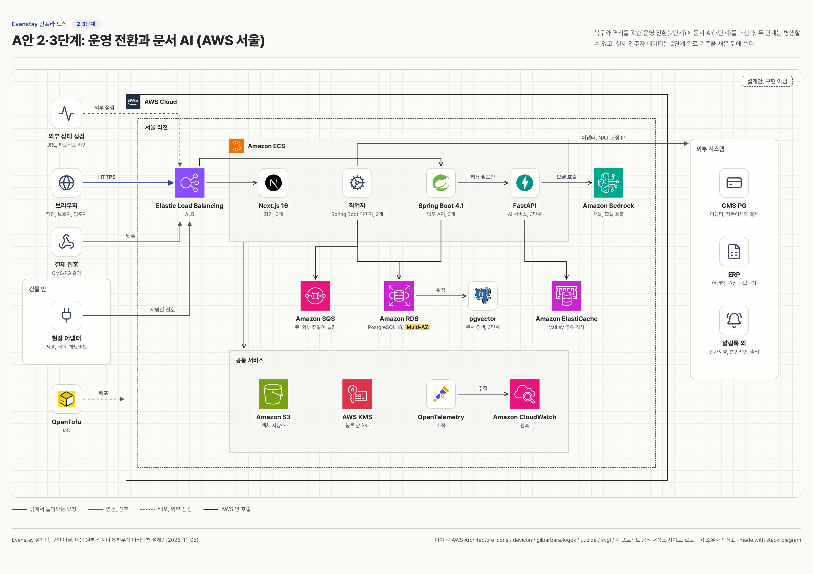
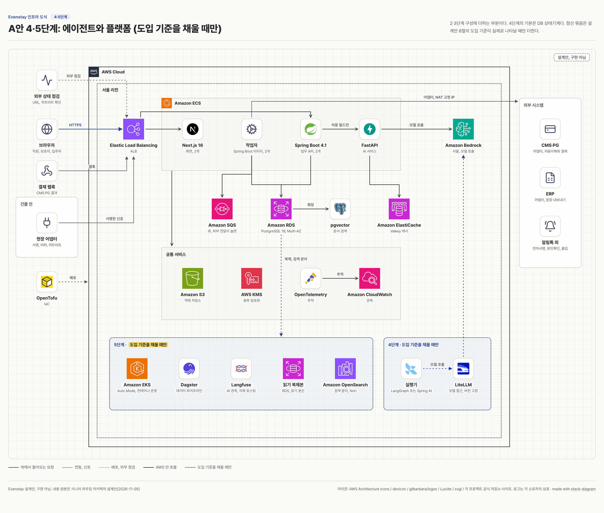
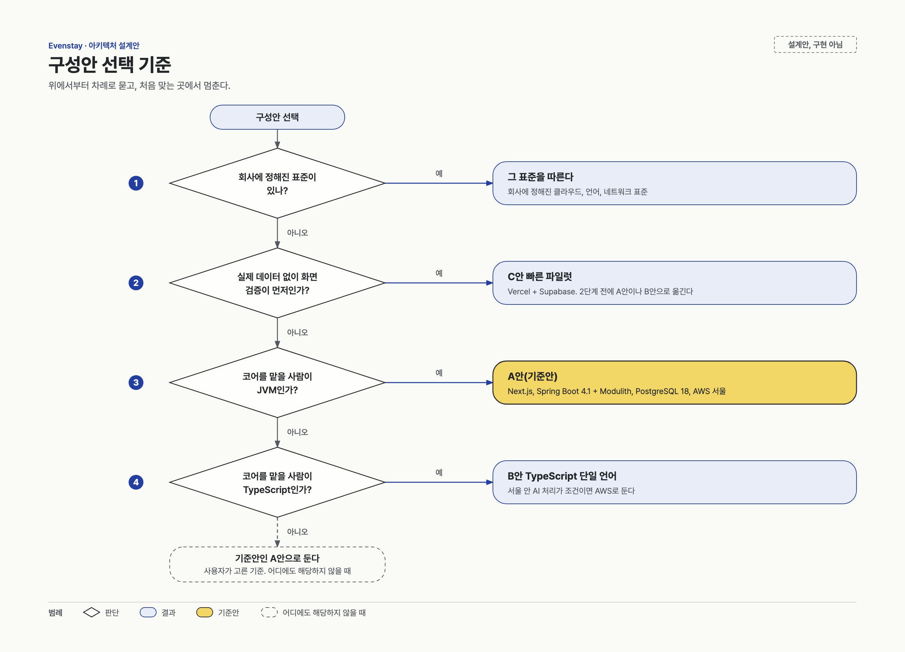
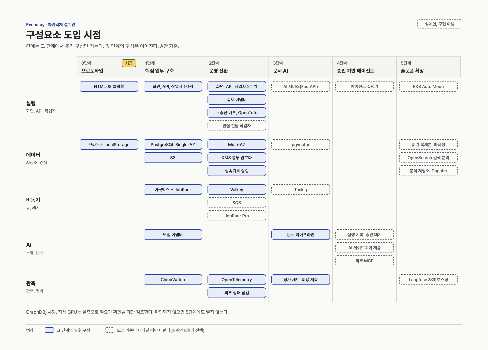
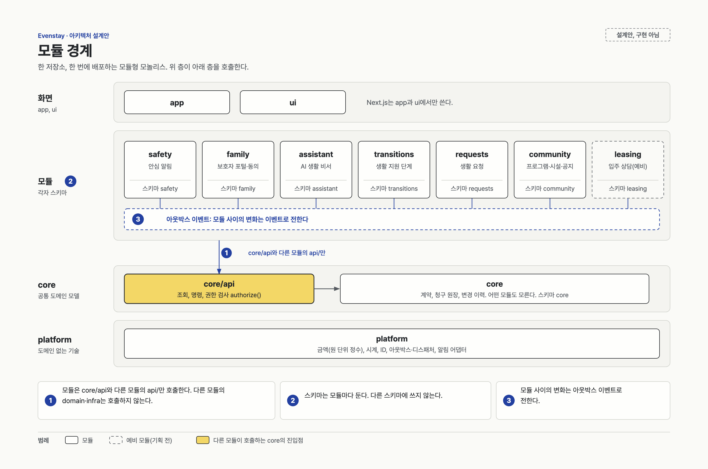
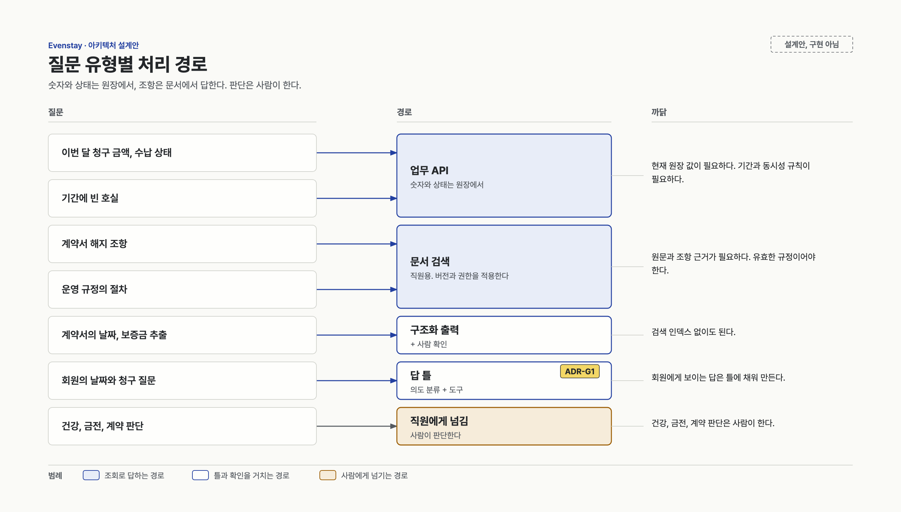
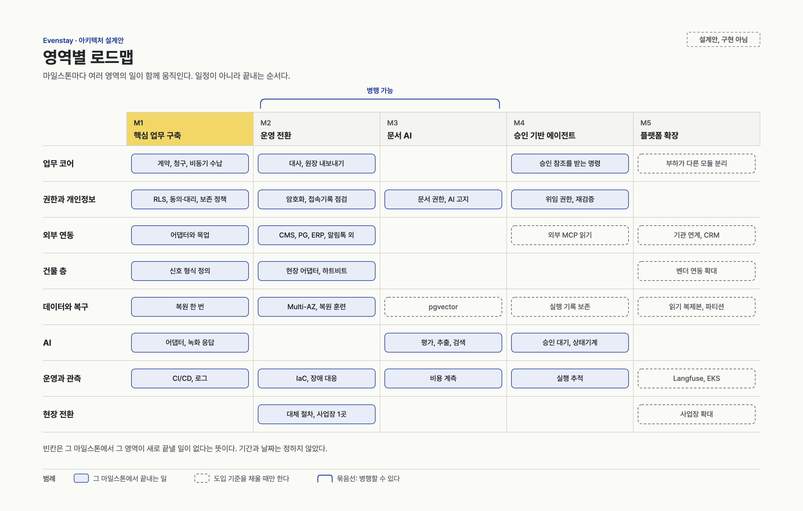

아키텍처 설계안
기준안으로 시작해 필요가 확인될 때만 구성을 늘립니다.
설계 버전 0.1.6입니다. 구현하지 않은 설계안이며 금액은 A안 운영 환경 1벌의 고정비 계산값입니다. RDS 주문 가능 조합을 확인한 뒤 다시 계산해야 합니다. 로그, 전송, 백업, 모델 호출료는 빠져 있습니다. 법령 내용은 법률 검토 전입니다.
계약부터 수납까지
가상의 A 사업장에서 한 계약을 월 청구하고 자동이체로 수납하는 사례입니다. 현재는 클릭형 프로토타입이며, 아래 처리와 외부 연동은 구현 전 설계안입니다.
먼저 보는 설계 판단
- 사업장마다 요금이 다를 수 있어 계약에 요금표 버전을 연결합니다. 과거 청구의 기준을 추적하기 위해서입니다.
- 발행한 청구서는 덮어쓰지 않고 다음 초안에 조정 전표를 더합니다. 바뀌기 전 금액과 이유를 남기기 위해서입니다.
- 예상 수납과 확정 수납을 분리해 결과 대기를 실제 수납으로 오인하지 않도록 합니다. 배치 결과가 불명일 때는 재전송하지 않고 조회와 대사로 확인합니다.
- 보호자 열람 동의와 대리권을 따로 확인합니다. 관계만으로 조회나 납부 권한이 생기지 않도록 하기 위해서입니다.
핵심 ERD: 계약·청구·수납의 관계
계약·청구·수납에 필요한 관계만 추린 개념도입니다. 청구 실행과 자동이체 동의·배치는 아래 표에서 보완하며, 전체 ERD는 상세 설계에서 확인할 수 있습니다. 작은 화면에서는 도식을 열어 확대해서 볼 수 있습니다.

| 연결 | 관계와 기준 |
|---|---|
| 사업장 → 호실 | 사업장은 동을 거쳐 여러 호실을 가집니다. |
| 계약 ↔ 계약 당사자 ↔ 입주자 | 계약에 당사자 행을 두어 한 명 이상의 입주자를 연결합니다. |
| 계약 → 요금표 버전 | 계약이 사업장의 요금표 버전을 가리킵니다. 같은 버전을 여러 계약이 쓸 수 있습니다. |
| 계약 + 청구 기간 → 청구서 | 같은 계약과 기간의 청구서는 최대 한 건입니다. |
| 청구서 → 청구 항목·수납 | 한 청구서에 여러 항목과 수납 기록이 연결될 수 있습니다. 예상 수납은 별도의 작업 기록입니다. |
| 청구 생성 실행 → 청구서 | 사업장의 청구 생성 실행이 해당 기간의 청구서를 만듭니다. |
| 자동이체 동의·배치 → 예상 수납 | 계약의 출금 동의와 사업장의 출금 의뢰 배치가 해당 예상 수납에 연결됩니다. 자동이체·가상계좌로 확정된 수납은 예상 수납을 참조합니다. 수동 수납이나 건별 결제의 수납은 이 참조가 없을 수 있습니다. |
한 계약이 이어지는 흐름
거주 중 계약 → 청구 초안 → 청구 발행 → 자동이체 결과 대기 → 수납 확정 → 사후 대사
자동이체를 선택한 가상 흐름입니다. 결과 대기는 예상 수납의 상태이며 수납 확정은 Payment 기록으로 이어집니다.
- 계약 · 거주 중경리 또는 본사 담당자가 A 사업장의 호실·입주자·계약 당사자와 요금표 버전을 확인합니다. 서명과 입주 처리를 거친 계약은 ACTIVE입니다. 청구 대상은 계약 상태만이 아니라 청구 기간으로 고릅니다.계약 체결 때의 요금표 버전을 남겨 이후 청구의 근거를 찾습니다.계약의 승계·퇴거
- 월 청구 · 작성 중 → 발행같은 계약의 해당 월에 청구 생성 실행(BillingRun)으로 초안(DRAFT)을 만들고, 경리가 계약의 요금표와 기준일의 사업장 청구 일정·사용 근거를 확인해 발행(ISSUED)합니다. 발행 시 금액과 납부 기한이 고정됩니다.계약과 청구 기간 조합마다 청구서는 최대 한 건이며 발행 뒤 정정은 별도 기록으로 남깁니다.발행 후 정정
- 자동이체 · 결과 대기 → 수납등록된 출금 동의를 확인하고 발행된 청구서의 예상 수납을 배치에 실어 전송하면 결과 대기(PENDING_BANK_RESULT)가 됩니다. 제공자 결과가 출금 성공으로 확인되면 CONFIRMED와 함께 Payment 한 건을 쓰고, 은행 입금은 이후 3자 대사로 맞춥니다.예상 수납은 작업 기록이고 Payment가 수납 원장입니다. 결과 대기만으로 돈이 들어왔다고 기록하지 않습니다.중복·시간 초과 처리
출금 의뢰 배치의 결과를 알 수 없는 상태는 RESULT_UNKNOWN입니다. 이는 예상 수납의 상태가 아닙니다.
다사업장: 공통 구조와 사업장별 규칙
같은 계약·청구 구조를 쓰되 요금표와 청구 일정은 사업장별 버전으로 관리합니다. 예를 들어 가상의 두 사업장은 식사비 규칙이 다를 수 있습니다. 서버가 운영사와 사업장 범위를 확인해 다른 사업장의 기록을 섞지 않습니다.
단계별 예외와 확인
- 계약 · 승계와 퇴거
- 담당자가 근거와 권한을 확인합니다. 승계는 옛 계약을 남기고 새 계약을 연결하며, 퇴거 정산은 본사 승인을 거칩니다.
- 발행 · 정정
- 발행한 청구서를 임의로 취소하거나 덮어쓰지 않습니다. 다음 초안에 원래 항목과 이유를 연결한 조정 전표를 추가합니다.
- 수납 · 중복 결과
- 제공자별 검증과 중복 식별 기준을 두고 현재 상태를 다시 확인합니다. 이미 반영한 수납을 다시 쓰지 않으며, 실제 제공자 규격과 키는 연동 전에 확인해야 합니다.
- 수납 · 응답 시간 초과
- 출금 의뢰 배치의 결과를 알 수 없는 상태는 예상 수납의 상태가 아닙니다. 해당 배치는 다시 보내지 않고 제공자 조회와 대사, 사람 확인으로 처리합니다. 결과 대기 중 수동 수납과 승계의 최종 정책은 미정입니다.
누가 무엇을 볼 수 있나요?
| 주체 | 허용 범위와 조건 |
|---|---|
| 본사 | 부여된 운영사 또는 사업장 범위에서 계약과 청구를 처리합니다. 사업장별 요금표 설정은 본사 관리자가 합니다. |
| 사업장 직원 | 자기 사업장 범위에서 직무별로 봅니다. 일반 직원은 청구 근거를 볼 수 있고, 경리 등 권한이 있는 담당자가 발행·조정·수납을 기록합니다. |
| 입주자 | 본인의 발행된 청구서와 근거를 확인하고 본인 결제를 할 수 있도록 설계합니다. |
| 보호자 | 보호자는 family의 동의 정책에 따라 입주자가 허락한 청구 정보만 봅니다. 보호자 관계만으로 대리권이 생기지는 않습니다. |
| 대리인 | 유효한 대리 범위를 따로 확인합니다. 청구서 조회에는 VIEW_INVOICE, 결제에는 PAY 범위가 필요합니다. |
구현한다면 확인할 조건
- 같은 계약·월의 중복 청구를 막고 발행 후 원래 항목과 조정 이유를 추적할 수 있는지 확인합니다.
- 역할·사업장 범위와 보호자 동의, 대리인의 조회·납부 범위를 각각 허용과 거부 사례로 확인합니다.
- 같은 결과의 반복 수신, 응답 시간 초과 뒤 늦은 성공과 대사 불일치를 시험합니다. 제공자별 식별·인증 규격과 재확인 주기는 아직 정해지지 않았습니다.
현재와 이후
- 현재
- 가상 데이터와 클릭형 프로토타입으로 화면과 흐름을 시연합니다. 실제 고객 데이터와 실결제는 사용하지 않습니다.
- 다음 설계 단계
- 가상 데이터로 계약·청구·권한·원장을 먼저 연결하는 구축안을 둡니다. 핵심 근거와 접근 범위를 먼저 검증하기 위해서입니다.
- 실제 운영 전
- 동의·접속 기록·복구와 법률 검토 등 단계별 완료 조건과 외부 제공자 규격을 확인해야 합니다. 첫 출시 범위와 일정은 확정되지 않았습니다.
판단 근거를 더 보기
단계별 구성
단계는 일정이 아니라 기술이 쌓이는 순서입니다. 2단계와 3단계는 병행할 수 있습니다. 실제 입주자 데이터는 2단계 완료 기준을 채운 뒤에 받습니다.

서버 없이 화면과 흐름을 검증합니다. 지금 있는 결과물입니다.
- 월 고정비
- 해당 없음
추가 구성
- HTML과 JS 클릭형 프로토타입
- 브라우저 저장소의 상태
- 시연 41단계
완료 기준
- 권한마다 다른 화면을 끝까지 눌러 볼 수 있습니다
계약, 청구, 권한, 원장을 컨테이너 3개와 DB 하나로 세웁니다. 가상 데이터만 씁니다.
- 월 고정비
- 약 $261
추가 구성
- Next.js, Spring Boot API,
- RDS PostgreSQL 18, 모듈별 스키마와 RLS, 프라이빗 서브넷
- 와 JobRunr, 동의·대리·보존·접속기록 테이블
완료 기준
- 가상 데이터만 씁니다
- 다른 사업장 ID를 직접 요청해도 막힙니다. API와 작업자 경로 모두 테스트합니다
- 같은 결제 이벤트가 여러 번 와도 수납은 한 번입니다
- 원장은 추가만 됩니다
- 복원 절차를 한 번 돌려 봤습니다
- 운영사 문맥 누락, 다른 운영사, 연결 풀의 이전 문맥 재사용을 API와 작업자에서 막습니다
- 한 사업장 작업이 실패해도 나머지는 처리하고 완료된 업무 효과는 반복하지 않습니다

실제 입주자 데이터를 받을 수 있는 복구, 격리, 법적 준비를 갖춥니다.
- 월 고정비
- 약 $546
추가 구성
- Multi-AZ, 화면과 API와 작업자 2개씩, Valkey 공유 캐시
- 실제 어댑터(CMS, PG, ERP 배치, 알림톡, 출입 조회, 전자서명, 본인확인)
- , , 접속기록 점검, OpenTelemetry
완료 기준
- 를 복원 훈련으로 확인하고 동의 철회를 다시 적용했습니다
- 시간 초과를 실패로 단정하지 않고 대사로 넘깁니다
- 가 끊기면 앱 밖 경로로 알리고 접수자가 확인합니다
- 알림이 전달되지 않으면 다음 수단으로 넘어갑니다
- 월 청구 중에도 넘김 지연이 설정 한도 안에 있습니다
- 접속기록 점검과 침해 범위 산출을 테스트했습니다
- , 처리방침, 동의 근거가 법률 검토를 거쳤습니다
- 훈련을 했고 인수인계 절차가 있습니다
- 철회·파기 기록을 다시 적용한 뒤에만 보호자 조회와 관련 발송을 엽니다
- 늦은 신호의 종료·진행·확인 전 상태를 대사합니다
- 결과 대기 중 수납·승계 규칙을 확정하거나 CMS를 끈 상태입니다

직원용 문서 추출과 을 평가와 함께 도입합니다.
- 월 고정비
- 약 $567
추가 구성
- documents 모듈, FastAPI AI 서비스(업무 DB 접근 없음)
- pgvector, 전문 검색, 문서 파이프라인
- 평가 세트, 건당 비용 계측,
완료 기준
- 근거 문서와 쪽 번호를 제시합니다
- 폐기된 규정이 나오지 않습니다
- 권한 밖 문서가 모델에 들어가지 않습니다
- 성공 1건당 비용을 압니다
하루를 넘기는 승인 흐름을 재개할 수 있게 합니다.
- 월 고정비
- 미정
추가 구성
- 과 승인 테이블, 기본은 DB 상태기계
- 재개와 분기가 복잡해지면 실행기(LangGraph, Spring AI 중 하나)
- , 공급자가 둘이 되면
완료 기준
- 작업자가 재시작돼도 같은 제안이 두 번 만들어지지 않습니다
- 승인 뒤 권한이나 계약 버전이 바뀌면 실행이 거절됩니다
- 승인 없이 같은 명령을 낼 수 없습니다
- 문서 안의 지시문이 도구 권한을 바꾸지 못합니다

측정된 병목만 분리합니다. 도입 기준을 채우지 않으면 진행하지 않습니다.
- 월 고정비
- 미정
추가 구성
- , 파티션, 검색 분리
- 분석 저장소, 데이터 파이프라인, 기관 연계
- EKS Auto Mode, 부하가 다른 모듈 분리
완료 기준
- 도입 전후의 지표로 효과를 설명할 수 있습니다
구성안 세 가지
세 안은 무엇을 먼저 고정하느냐가 다릅니다. 모듈 경계, PostgreSQL 스키마, 아웃박스 구조는 같아서 안을 바꿔도 스키마, 데이터, 화면은 남습니다. 코어 언어가 바뀌면 코어와 모듈 코드, 테스트는 다시 작성합니다.
| 항목 | A안(기준안) | B안 TypeScript | C안 빠른 파일럿 |
|---|---|---|---|
| 먼저 고정하는 것 | 팀과 채용 | 언어 하나 | 검증 속도 |
| 업무 코어 | Java 25, Spring Boot 4.1, Modulith | NestJS 또는 Fastify | 프레임워크 없는 TypeScript 패키지와 별도 작업자 |
| 실행 환경 | ECS | ECS Fargate 또는 Cloud Run | Vercel과 컨테이너 작업자 |
| DB | RDS PostgreSQL 18 | RDS 또는 Cloud SQL | Supabase PostgreSQL 서울 |
| 비동기 | 아웃박스와 JobRunr | 아웃박스와 SQS 또는 Cloud Tasks | 아웃박스와 외부 작업자 |
| 적합한 경우 | 코어를 맡을 팀이 JVM일 때 | 팀이 TypeScript일 때 | 실제 데이터 없이 화면을 며칠 안에 보여야 할 때 |
| 약점 | 언어가 1단계에 둘, 3단계부터 셋이고 초기 부담이 큽니다 | 모듈 경계 검사 도구를 직접 골라야 합니다 | 복구와 작업자를 따로 더하고 고정 송신 IP가 유료입니다 |
| 실제 입주자 데이터 | 2단계 완료 기준을 채운 뒤 | 2단계 완료 기준을 채운 뒤 | A안이나 B안으로 옮긴 뒤 |
기준은 A안입니다. 사용자가 고른 팀과 채용 기준을 따른 것이고, 회사 표준을 알게 되면 그 표준을 따릅니다. 어느 안으로 갈지는 아직 정하지 않았습니다.
안을 옮길 때
| 이동 | 유지 | 고쳐서 옮김 | 다시 작성 |
|---|---|---|---|
| C안에서 B안 | 스키마와 데이터, 화면, TypeScript 코어 패키지 | 인증 연결, RLS 변수 주입, 작업자 배포 | 실행 환경, IaC |
| C안에서 A안 | 스키마와 데이터, 화면 | 인증 연결, RLS 변수 주입 | 코어와 모듈 코드, 테스트, 실행 환경 |
| A안과 B안 사이 | 스키마와 데이터, 화면, OpenAPI 계약 | 인증 연결 | 코어와 모듈 코드, 테스트, 작업 실행 테이블 |
선택 기준

안별 인프라
구성요소 도입 시점
필수는 그 단계 구성에 들어가고, 선택은 도입 기준이 나타나지 않으면 더하지 않습니다. 기준이 없어도 다음 단계로 진행할 수 있습니다. 수치는 판단이고 공식 기준이 아닙니다.

도입 기준 표 펼치기
| 더할 것 | 단계 | 구분 | 조건 |
|---|---|---|---|
| Multi-AZ, 2개 운영 | 2 | 필수 | 실제 입주자 데이터를 넣기 전 |
| 실제 어댑터 | 2 | 필수 | 계약한 제공자의 사양을 받았을 때 |
| Valkey | 2 | 필수 | Next.js를 2개 이상 띄울 때 |
| 고정 송신 IP | 2 | 선택 | 제공자가 허용목록을 요구할 때 |
| 안심 전담 작업자 | 2 | 선택 | 월 청구 중 넘김 지연이 설정 한도를 넘을 때 |
| SQS | 2 | 선택 | 외부 전달 종류가 늘고 JobRunr 대기가 업무에 영향을 줄 때 |
| JobRunr Pro | 2 | 선택 | 우선순위 큐나 트랜잭션 참여가 꼭 필요할 때 |
| Python AI 서비스 | 3 | 선택 | 문서 파싱과 검색에 Python 라이브러리가 필요할 때 |
| Taskiq | 3 | 선택 | Python 작업이 별도 큐를 요구할 때 |
| pgvector | 3 | 선택 | 직원용 문서 검색이 필요할 때 |
| 실행 기록, 승인 대기 | 4 | 선택 | 승인이 하루를 넘기는 AI 흐름이 생길 때 |
| 에이전트 실행기 | 4 | 선택 | 재개와 분기를 직접 구현하는 코드가 복잡해질 때 |
| AI 게이트웨이 제품 | 4 | 선택 | 공급자가 둘 이상이거나 앱별 예산 키가 필요할 때 |
| 외부 MCP | 4 | 선택 | 도구를 외부에 공개할 요구가 있을 때 |
| 검색 분리 | 5 | 선택 | 전문 검색이 원장 DB 부하를 침범하거나 한국어 품질이 평가를 못 넘을 때 |
| 읽기 복제본 | 5 | 선택 | 읽기 부하가 우세하고 지연을 허용하는 조회를 나눌 수 있을 때 |
| 파티션 | 5 | 선택 | 보존 삭제와 유지보수 시간이 문제가 될 때 |
| 전용 벡터 DB | 5 | 선택 | 검색 부하가 원장을 침범할 때 |
| 분석 저장소 | 5 | 선택 | 원천 시스템이 3개를 넘거나 리포트가 원장 성능을 침범할 때 |
| 기관 연계, CRM | 5 | 선택 | 계약한 상대의 사양을 받았을 때 |
| 소유주별 DB 분리 | 5 | 선택 | 소유주 고유 키나 지역 분리 요구가 올 때 |
| Kubernetes | 5 | 선택 | 개발자 10명 이상, GPU 스케줄링, 기존 플랫폼팀이 있을 때 |
| GraphDB | 5 | 선택 | 여러 단계를 건너는 관계 질문이 평가 세트의 상당 부분일 때 |
| 샤딩, 자체 GPU | 5 | 선택 | 한계와 사용률이 실측으로 확인될 때 |
전체 구조
는 건물 안에서 끝나는 구조를 권고안으로 둡니다. 국내 설비의 실제 구조는 벤더 문의 전입니다. Evenstay는 그 사본을 받아 과 기록을 맡습니다. 클라우드가 멈춰도 호출은 계속 동작해야 합니다.
핵심 흐름
실패 비용이 가장 큰 네 흐름입니다. 도식을 새 창에서 열면 경로를 따라가며 볼 수 있습니다.
- 국내 벤더의 서명 웹훅은 확인되지 않아 가 서명합니다
- 멈춘 구성요소는 스스로 알리지 못합니다. 가 끊기면 앱 밖 점검이 경보를 냅니다
- 알림이 전달되지 않으면 다음 수단으로 넘어갑니다. 늦은 신호는 현장 종료 여부를 대사하고 상태를 모르면 직원이 확인합니다
- 5분 미응답 시 다음 당번을 호출하는 기준은 사업장 설정값입니다. 법정 요건으로 확인되지 않았습니다
- 동의, 출금 의뢰 배치, 예상 수납은 상태가 따로 있습니다. 결과가 오기까지 로 둡니다
- 응답이 없으면 실패가 아니라 알 수 없음입니다. 다시 보내지 않고 조회하며, 그 줄의 출금이 없음을 제공자에게 확인한 뒤에만 사람이 닫습니다
- 수납 반영은 일반 프로그램이고 AI를 넣지 않습니다
- 결과 대기 중 수납과 승계의 미결정을 닫거나 CMS를 끈 뒤 운영 전환 조건을 확인합니다
- 승인 범위는 특정 명령과 입력값입니다
- assistant의 명령이 승인 ID를 받아 같은 트랜잭션에서 권한과 대상 버전을 다시 확인하고 코어 명령을 부릅니다
- 세션이 없는 동안의 조회는 으로 합니다. 호출마다 현재 권한을 다시 평가합니다
- 는 중복을 막지 않아 멱등 키를 앞에 둡니다
- 새 버전을 검증한 뒤 을 합니다
- 보호자 공유 철회는 해당 보호자의 조회와 예정 발송을 막습니다. 원본 파기는 처리 근거와 보존 정책으로 따로 판단합니다
- 파싱한 문서는 신뢰하지 않는 입력입니다. 올린 파일은 악성코드 검사를 지납니다
- 원장 값은 임베딩하지 않고, 계약서의 개인정보는 청크에서 마스킹합니다
개인정보와 권한
실제 입주자 데이터를 받으려면 기술 구성만으로는 부족합니다. 주체마다 인증과 앱 밖 경로를 정하고, 동의와 대리 권한을 처음부터 표로 둡니다. 법령 항목은 모두 법률 검토가 필요합니다.
| 주체 | 로그인 | 강한 인증 | 앱 밖 경로 |
|---|---|---|---|
| 입주자 | 소셜 또는 전화번호 인증 | 금전·동의 변경 때 재인증 | 전화, 프런트, 직원 대행 |
| 보호자 | 소셜 또는 전화번호 인증 | 건강 소식 첫 열람 | 전화, 문자 |
| 대리인, 후견인, 신원인수인 | 보호자와 같음 | 권한 근거 문서 확인 | 직원 대행 |
| 직원 | 사내 SSO | 외부 접속 때 필수 | 해당 없음 |
| 소유주 이용자 | 전용 계정 | 필수 | 해당 없음 |
| 파트너, 시스템, 에이전트 | 토큰, 시스템 주체, | 범위와 만료 필수 | 해당 없음 |
처음부터 두는 것
- 컬럼마다 분류, 암호화 여부, 보존 기간, 모델 투입 가능 여부를 적습니다. 민감 컬럼은 동의 근거가 비면 저장되지 않습니다.
- 동의
- 목적, 범위, 방식, 증빙, 유효기간, 철회 이력을 기록합니다. 보호자 공유와 모델 투입 동의의 철회 효과를 구분하며 건강 소식은 family만 전달합니다.
- 대리와
- 대리인과 후견인은 보호자와 다른 역할입니다. 긴급 열람은 사유, 승인자, 만료, 사후 통지를 둡니다.
- 접속기록
- 직원뿐 아니라 보호자, 소유주 이용자, 시스템, 에이전트도 남깁니다. 보관은 2년을 하한으로 둡니다.
- 보존과 파기
- 보존 정책 테이블과 파기 배치를 두고 법정 장부는 분리 저장합니다.
- 결제 정보
- 카드번호와 인증정보를 받지 않습니다. 로그와 AI 입력에는 카드와 계좌 번호를 넣지 않습니다.
- 수탁자, 항목, 처리 위치, 이전 근거를 설정 파일로 둡니다. 대장에 없는 경로로 나가는 배포는 막습니다.
- 기능, 대상, 입력 분류, 최종 결정자, 고지 문구 버전을 적습니다. 회원 대면 AI는 첫 응답에 알립니다.
- 운영사와 사업장 범위
- 서버가 운영사, 허용 사업장, 주체를 함께 정합니다. 운영사 문맥이 없으면 거부하고 사업장 행은 두 범위를 모두 검사합니다.
처리 위치
| 경로 | A안 기본 | 확인할 것 |
|---|---|---|
| 모델 추론 | Bedrock 서울, Sonnet 5 | 비교한 Claude 모델 중 Opus 5와 Sonnet 5는 리전 안 처리가 됩니다. 모델 ID, 리전, 엔드포인트의 허용목록을 확인합니다(2026-11-05 조회) |
| 임베딩 | 3단계에 결정 | 서울 안 처리는 Titan Text Embeddings V2입니다 |
| 재순위화 | 쓰지 않는 것이 기본 | Bedrock 재순위화 모델은 서울에 없습니다 |
| 가드레일 | 미사용 기본 | 한국어는 Standard 등급만 되고 Standard는 교차 리전 처리입니다 |
| 백업 | 서울 | 서울 밖 백업은 국외 보관이 될 수 있어 법률 검토 전에는 두지 않습니다 |
장애와 사고 대응
호출은 건물 안에서 이어지고, 이 시스템이 멈출 때는 사람이 이어받습니다. 서울 밖 한국 리전을 찾지 못해 리전 전체 장애는 막지 못합니다.
- 등급
- 안전 경로, 청구·수납, 그 밖의 순서입니다. 시간 수치는 정하지 않았습니다.
- 이미 수집한 최소 항목만 담은 읽기 전용 사본을 씁니다. 생성 시각, 만료, 열람 범위, 복구 후 파기를 정하고 장애 구간을 기록합니다.
- 교대 인계
- 확인되지 않은 알림 목록과 대체 절차 상태를 넘기는 화면과 절차를 둡니다.
- 침해 사고
- 접속기록과 데이터 분류로 영향 범위를 산출하고 통지 명단과 이력을 만듭니다.
- 복구 뒤
- 결제와 ERP를 대사하고 철회와 파기 기록을 다시 적용합니다. 재적용과 검증이 끝나기 전에는 보호자 조회와 관련 발송을 열지 않습니다.
- 비밀과 키
- 종류별로 소유자, 순환 주기, 유출 시 폐기 절차를 표로 둡니다.
설계 원칙
어느 안이든 처음부터 지키는 규칙입니다. 다음 단계로 확장할 때 다시 작성하지 않으려는 것입니다.
- 서비스별 이미지 하나, 설정은 환경변수, 상태는 DB와 객체 저장소에 둡니다.
- 큐, 모델, 검색, 알림, 결제, ERP, 수신은 인터페이스 뒤에 둡니다.
- AI 서비스는 업무 DB에 접근하지 않습니다.
- 금액은 원 단위 정수, 발행 항목은 불변으로 시작합니다.
- 외부 호출의 시간 초과는 알 수 없음입니다. 실패로 적지 않습니다.
- 캐시와 모델 출력은 원장이 되지 않습니다.
- 호출 경로는 이 시스템 없이 동작해야 합니다.
- 입주자와 보호자가 쓰는 기능에는 전화, 문자, 직원 대행, 보호자 대행 경로가 있습니다.
- 주민등록번호를 수집하지 않고, 민감 컬럼은 처음부터 암복호 포트 뒤에 둡니다.
- 이 시스템은 수납 기록과 대사까지만 합니다. 정산금을 대신 받아 나눠 주지 않습니다.
- 법정 요건과 입법예고 중인 요건은 코드가 아니라 정책 버전과 설정으로 둡니다.
- 발생 시각과 입력 시각을 따로 저장합니다.
- 회원·보호자·청구·권한 응답은 공유 캐시에서 제외하는 것을 기본으로 둡니다.

미리 정할 한도
- 세 계층이 3번씩 시도하면 하위 호출은 최대 27번입니다. 재시도 권한은 한 계층에만 둡니다. 업무 경로에서는 아웃박스, 지연 작업은 JobRunr입니다.
- API, 작업자, JobRunr, 배치에 무중단 배포 때의 겹침까지 더해 자동 확장 상한을 정합니다.
- 복제본 제외 조회
- 결제 직후 잔액, 호실 배정, 권한 회수, 보호자 허락 철회, 넘김 판단은 원본에서 읽습니다.
- 데이터 위치
- DB를 서울에 뒀다고 전 경로가 서울인 것은 아닙니다. 경로마다 처리 위치를 따로 확인합니다.
- 화면 2개 이상 운영
- 동일 빌드, 배포 버전 구분, 캐시 무효화 전파를 정합니다. Server Actions를 쓰면 암호화 키 관리도 확인합니다.
비동기 처리의 역할
| 일 | 담당 | 재시도 권한 |
|---|---|---|
| 모듈 사이 이벤트, 외부 전달 | 소유 모듈별 , platform 디스패처 | 아웃박스 한 곳 |
| 지연·반복 작업 | JobRunr | JobRunr |
| 소비자 멱등 | 기존 모듈별 처리 완료 표, 정본 재조회 또는 이벤트별 revision | 해당 없음 |
| 넘김 타이머 | safety 전용 스레드와 연결 풀 | 코어 재시도와 분리 |
| Modulith | 모듈 경계 검사와 문서화 | 이벤트 기록은 쓰지 않습니다 |
| 사업장별 반복 작업 | 한 곳이 실패해도 나머지는 처리합니다 | 실패한 사업장만 재시도합니다 |

자료 비교 결과
GPT 조사 문서, 시니어 하우징 조사, 단계별 제안을 비교했습니다. GPT 문서의 핵심 주장 14건과 앞선 문서의 판단 2건을 공식 문서와 대조했고 틀린 주장은 없었습니다. 재검토에서 버전, 단가, 처리 위치를 다시 대조하고 법령과 운영 요건의 빠진 곳을 채웠습니다.
| 주제 | GPT 조사 문서 | 기존 문서 | 이 설계 |
|---|---|---|---|
| 업무 백엔드 | NestJS, Fastify 최상위 | Spring Boot + Modulith | A안은 Spring, B안은 NestJS 또는 Fastify |
| 클라우드 | 표준이 없으면 GCP 1순위 | AWS 서울 하나 | A안은 AWS 서울. 사용자가 고른 기준을 따랐고, 서울 안 AI 처리는 B안의 선택 조건입니다 |
| 비동기 | 관리형 큐 | PostgreSQL 안의 작업 | 1단계는 PostgreSQL, 전달이 늘면 SQS |
| 업무 에이전트 | 승인 후 환불까지 실행 | 금전 판단은 사람 | 직원용 초안과 제안까지 |
| 범위 모델 | 조직, 사업장, 호실 | 운영사, 소유주, 사업장, 호실 | 소유주 범위를 유지 |
| 호출과 결제 | 일반 연동으로 다룸 | 호출 자립, CMS 상태기계 | 기존 유지 |
GPT 문서에서 가져온 것
- 재시도 한도와 DB 연결 한도
- 읽기 복제본 제외 조회
- 파티션 유일성 함정
- 문서 삭제 전파와 활성 버전 전환
- 승인 재검증과 입력 해시
- 질문 종류별 경로
미결정 사항
아래는 아직 정하지 않았습니다. 정하는 시점은 마일스톤으로 적었습니다.
| 항목 | 해결 방법 | 정하는 시점 |
|---|---|---|
| 구성안 확정 | 회사 표준을 알면 그것을 따릅니다 | M0 |
| 복구 목표 값 | 업무별로 정하고 복원 훈련으로 확인합니다 | M0 |
| 건물 층 구성 | 호출 설비 벤더 문의 뒤 확정합니다 | M0 |
| RDS PostgreSQL 18 주문 조합 | 서울, 엔진 세부 버전, 인스턴스, 스토리지, Multi-AZ를 주문 옵션 조회로 확인합니다 | M0 |
| 작업 실행(JobRunr, DBOS) | 비교 전까지 JobRunr를 기본으로 봅니다 | M1 |
| 시스템 작업 범위, 모듈별 DB 역할 | 운영사 범위 안에서 사업장별 runAs를 적용합니다 | M1 |
| 인증 제품 | 유형 구분은 M1, 제품은 M2에 정합니다 | M2 |
| 온콜 도구, 외부 점검 | Opsgenie가 2027-04-05에 끝나 다른 도구를 고릅니다 | M2 |
| 처리 지역과 외부 AI 전송 | 법률 검토 전입니다 | M2 시작 전 |
| 영향평가, ISMS-P 해당 여부 | 운영사 규모를 알아야 합니다 | M2 시작 전 |
| 모델 공급자 | 평가 세트로 비교합니다 | M3 |
| 에이전트 실행기 | 도입 기준을 채운 뒤 정합니다 | M4 |
| Next.js 보안 패치 | 도입 시점의 공식 보안 공지를 확인한 지원 패치를 정확한 버전으로 고정합니다 | M1, 운영 전환 전 재확인 |
로드맵
구현한다면 진행할 순서입니다. 팀 규모와 회사 표준을 몰라 기간은 적지 않았습니다. 조건을 채우지 못하면 시작하지 않고, 기준을 채우지 못하면 다음 단계로 진행하지 않습니다.
- M0
범위 확정
작업 순서
- 끝까지 만들 업무 흐름 하나 고르기
- 회사 표준 확인
- 호출 설비 벤더 문의 1건
- 구성안 확정
- 복구 목표 값 정하기
- RDS 주문 가능 조합과 비용 전제 확인
- 시작 조건
- 프로토타입 시연 41단계가 동작합니다
- 완료 기준
- 첫 흐름과 복구 목표에 합의했습니다
- 되돌리기 조건
- 해당 없음
- 결정 사항
- 구성안, 복구 목표, 건물 층 범위
- M1
핵심 업무 구축
작업 순서
- 운영사, 사업장, 역할, 주체 유형, 권한 검사, CI 경계 검사
- 변경 이력, , , 재처리
- 인물, 호실, 계약, 동의·대리 테이블
- 청구, 비동기 수납 모델, 조정, 멱등 규칙
- 신호 형식 정의
- 배포, 네트워크, 비밀 관리, 기본
- 복원 한 번 돌리기
- 시작 조건
- M0 완료
- 완료 기준
- 1단계 완료 기준과 운영사·사업장 격리, 사업장별 실패·이벤트 재처리 시험을 통과했습니다
- 되돌리기 조건
- 가상 데이터만 쓰므로 다시 만듭니다
- 결정 사항
- 작업 실행, ORM, 시스템 작업 범위, 모듈별 DB 역할
- M2
운영 전환
작업 순서
- Multi-AZ, Valkey, 계정 분리, OpenTofu
- 암호화, 접속기록 점검,
- 결제 어댑터와
- ERP 배치, 알림톡
- safety 모듈, , 출입 조회, 점검
- 인증, 전자서명, 본인확인
- 복원 훈련과 훈련
- 개시 데이터 적재
- 시작 조건
- M1 완료, 법률 검토 묶음 완료, C안이면 이전 완료
- 완료 기준
- 2단계 완료 기준, 철회 재적용 뒤 조회 재개, 늦은 호출 대사를 확인했습니다. CMS는 미결정을 닫았거나 꺼져 있습니다
- 되돌리기 조건
- 대사 불일치가 설정 한도를 넘거나 알림 누락을 못 잡으면 그 사업장을 대체 절차로 되돌립니다
- 결정 사항
- 인증 제품, 온콜 도구, 처리 지역
- M3
문서 AI
작업 순서
- 문서 원본, 버전, 접근 권한
- 평가 세트와 비용 계측
- 구조화 추출
- 운영 질의
- 초안
- 시작 조건
- M1 완료, AI 등록부와 고지 점검 완료. 첫 AI가 핵심 가치이면 1, 2번은 M1과 함께 시작합니다. 실제 데이터를 모델에 넣으려면 M2 완료
- 완료 기준
- 3단계 완료 기준을 채웠습니다. 가상 문서로 끝냈으면 그렇게 표시합니다
- 되돌리기 조건
- 평가가 떨어지면 모델과 프롬프트 버전을 되돌리고 실제 데이터 투입을 멈춥니다
- 결정 사항
- 모델 공급자
- M4
승인 기반 에이전트
작업 순서
- 과 승인 테이블
- 과 멱등한 조회·제안 도구
- DB 상태기계, 기준을 채우면 실행기
- 재시작, 중복, 권한 변경 테스트
- 시작 조건
- M3 완료, 승인이 하루를 넘기는 흐름과 대상 업무 명령이 있습니다
- 완료 기준
- 4단계 완료 기준을 채웠습니다
- 되돌리기 조건
- 재검증이 빠지거나 중복 효과가 나면 에이전트 실행을 끕니다
- 결정 사항
- 에이전트 실행기, 외부 MCP
- M5
플랫폼 확장
작업 순서
- 병목 하나 측정
- 한 구성요소만 더하기
- 전후 비교
- 효과가 없으면 되돌리기
- 시작 조건
- 이 측정으로 나타났습니다
- 완료 기준
- 도입 전후 지표로 효과를 설명합니다
- 되돌리기 조건
- 효과가 없으면 뺍니다
- 결정 사항
- 구성요소별로 도입할 때 결정
영역별 로드맵

모듈 도입 순서
코어는 어떤 모듈도 모르므로 순서를 바꿔도 코어를 다시 작성하지 않습니다. 이 순서는 의존 관계에서 도출한 제안입니다. 실제 데이터는 어느 모듈이든 M2 완료 뒤에 받습니다.
- 보호자 포털·동의M1 끝. 건강 소식을 전달하는 경로가 먼저 있어야 합니다
- 안심 알림M2. 호출 경로와 분리해 도입합니다
- 생활 요청M2 뒤. 유료 요청이 코어 청구로 연결되는 첫 지점입니다
- 프로그램·시설·공지M2 뒤. 다른 모듈에 주는 영향이 가장 적습니다
- 생활 지원 단계M2 뒤. 사람의 결정 흐름이 길어 앞선 모듈 뒤에 도입합니다
- 문서(documents)M3. 3단계에 새로 둡니다
- AI 생활 비서M3 평가 세트 뒤. 코어와 모듈의 조회 API가 있어야 답합니다
안을 바꾸는 비용은 M1을 지날수록 커집니다. C안은 M2 전에 A안이나 B안으로 옮깁니다. M2 뒤에 바꾸려면 실제 데이터 이전과 복구 절차까지 다시 테스트합니다.
법·제도 점검
점검은 마일스톤에 묶습니다. 아래 날짜는 공식 자료와 보도에서 확인한 것이고, 내용은 법률 검토 전입니다.
| 시점 | 볼 것 |
|---|---|
| M0 | 안전성 확보조치 기준 본문, 노인복지법 시행규칙 개정안 |
| M2 시작 전 | 처리방침, 위탁·이전 대장, 동의 근거, 접속기록 내부관리계획, 보존·파기, 영향평가와 ISMS-P 해당 여부 |
| M3 시작 전 | AI 기본법 시행령과 가이드라인, 모델 처리 위치와 이전 근거 |
| 2026-11-23 | 노인복지법 시행규칙 개정안 의견 수렴 마감 |
| 2027-01-01 | 안전성 확보조치 기준 부칙 조항 시행 |
| 2027-01-22 이후 | AI 기본법 과태료 계도기간이 끝날 수 있는 시점(추정) |
| 2027-04-05 | Opsgenie 지원 종료 |
| 2027-07-01 | 개인정보 보호 인증 의무화 규정 시행 예정 |
기존 장부를 쓰는 사업장으로 옮길 때의 순서입니다. 인력 수와 기간은 정하지 않았습니다.
- 개시 데이터
- 입주자, 계약, 보증금 개시 잔액, 기존 서면 동의의 증빙을 적재합니다
- 범위
- 한 사업장부터 시작해 사업장 단위로 넓힙니다
- 안심
- 읽기 전용 사본, 직원 화면, 2차 알림 켜기 순서로 갑니다. 켜기 전에 대체 절차 훈련을 끝냅니다
- 청구
- 월 마감 경계에서 전환하고 한 번의 마감을 두 방식으로 돌려 대사합니다
- 사람
- 야간과 교대 인계, 입주자와 보호자 안내를 전환 조건에 넣습니다
도식은 프로젝트 로컬 stack-diagram, Archify 3.2.0, diagram-design으로 만들었습니다. 지정한 Pretendard 글꼴을 자체 검사하고 도식을 다시 검증했습니다.